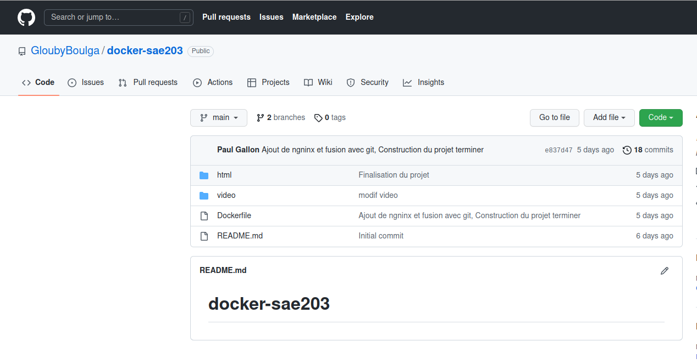
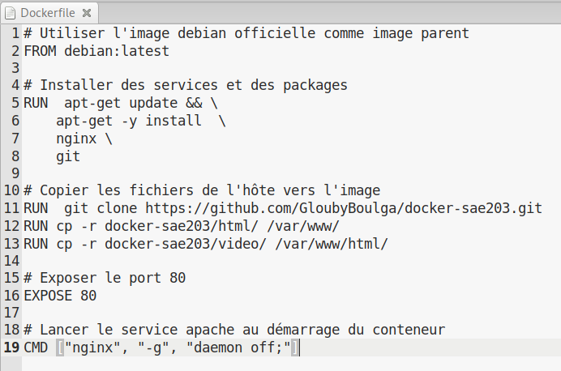
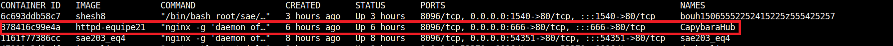

Nous avons décidé de faire un site internet de vidéo à la demande ayant comme principal intérêt des vidéos de capybaras.
Le théme des capybara nous est venu à l'idée car nous aimons beaucoup cette animal et que c'est un animal intéressant à découvrir.
Le site sera hébergé par Docker et contiendra des vidéos de capybaras que nous stockerons en interne dans Docker.
Notre github est répartie en deux branches, la branche main contenant le dockerfile et Capybarahub, et la branche gh-pages contenant la page web que nous utilisons pour la présentation à l'oral.
Image 1 : Branche main du github
Image 2 : Répertoire html de la branche main
Image 3 : Répertoire contenant les vidéos
Image 4 : Branche gh-pages du github
Notre docker est hébergé sur le port 666 et tout le monde peut accéder à notre site internet par le port 80. Le docker est lancé avec la dernière version de Debian et nous utilisons aussi nginx.
Image 5 : Fichier du dockerfile
En faisant la commande docker ps, nous pouvons voir que notre container s'affiche dans la liste ci-dessous.
Image 6 : Notre docker dans la liste des containers
Le lien ci-dessous permet d'accéder à notre site internet via le lien http://di-docker:666/ .
Capybarahub